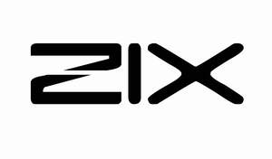

Trade Mark Journal No.2025/046 14 November 2025
UK00004287923 2 November 2025 (8)

- Class 8
- Scissor holders; Cuticle scissors; Hairdressing scissors; Embroidery scissors; Sewing scissors; Gardening scissors; Wick trimmers [scissors]; Scissors for children; Scissors for pizzas; Scissors for household use; Scissors for kitchen use; Razors; Electric razors; Razor knives; Razor strops; Japanese razors; Razor cases; Straight razors; Disposable razors; Cases (Razor -); Safety razors; Razor blades; Vibrating blade razors; Razor blade dispensers; Safety razor blades; Non-electric razors; Cases for razors; Cases adapted for razors; Blades for electric razors; Cartridges containing razor blades; Cartridges for razor blades; Razor strops [leather strops]; Cassettes for razor blades; Dispensers for razor blades; Safety razor blades (Dispensers for -); Containers adapted for razor blades; Manually-operated razor blade sharpeners; Razors, electric or non-electric; Abrading instruments [hand instruments]; Cutters; Nail extractors; Pizza cutters; Nail files; Tube cutters; Foil cutters; Callus cutters; Cake cutters; Glass cutters; Wire cutters; Box cutters; Nail clippers; Nail punches; Extractors (Nail -); Nail files, electric; Fishing line cutters; French fry cutters; Electric nail buffers; Electric hair cutters; Turnip cutters [knives]; Seat belt cutters; Nail polishers (Electric -); Caulking cutters [hand tools]; Pizza cutters, non-electric; Non-electric pizza cutters; Hand-operated weed cutters; Nail pullers, hand-operated; Electrically operated hair clippers [hand instruments]; Hair clippers for animals [hand instruments]; Electric hair clippers for animals [hand instruments]; Electric hair clippers for personal use [hand instruments]; Hair clippers; Abrading instruments; Stropping instruments; Pliers; Setting pliers; Fishing pliers; Cutting pliers [linemans' pliers]; Combination pliers; Locking pliers; Punch pliers; Punch pliers [hand tools]; Ear tag pliers for livestock; Hair-removing tweezers; Electric hair trimmers; Hair styling appliances; Electric hair crimper; Tweezers; Cuticle tweezers; Artificial eyelash tweezers; Nail buffers; Nail scissors; Nail nippers; Electric nail files; Nail nippers [hand tools]; Nail skin treatment trimmers; Nail polishers (Non-electric -); Nail files, non-electric; Carpenters' pincers [nail pullers]; Electric animal nail grinders; Nail extractors, hand-operated; Nail drawers [hand tools]; Battery-powered animal nail grinders; Roller heads for electronic nail files; Hand-operated nail clippers for pets; Nail clippers, electric or non-electric; Nail buffers for use in manicure; Nail buffers, electric or non-electric; Roller head refills for electronic nail files; Filler knives; Nasal hair trimmers; Electric nasal hair trimmers; Piercing apparatus (Ear -); Ear-piercing guns; Ear-piercing needles; Ear-piercing apparatus; Ear piercing apparatus; Electric ear hair trimmers; Sharpening instruments; Shearers [hand instruments]; Ice picks; Money scoops; Fertilizer scoops; Pick heads; Picks [hand tools]; Ice picks [hand tools]; Forks and spoons; Mortars and pestles; Fire hooks; Bill-hooks; Hand hooks; Bush hooks [hand tools]; Reaping hooks [hand-operated tools]; Fish hook sharpeners, hand-operated; Tube cutting instruments; Tube cutters [hand tools]; Pruning scissors; Scissor blades; Needle work scissors; Scissor sharpeners (Hand operated -); Tailor's shears; Wool shears; Border shears; Pocket shears; Pruning shears; Woolen shears; Pinking shears; Ikebana shears; Shear blades; Household shears; Paper shears; Multipurpose shears; Gardening shears; Multi-purpose shears; Blades for shears; Animal shearing implements; Hand shears (Hand operated -); Shears [hand operated tools]; Metal-cutting scissors [tin shears]; Poultry scissors; Hair cutting scissors; Wick trimmers being scissors; Scissors (Non-electric -) for wallpaper; Japanese grip scissors [Japanese thread clippers]; Shears; Scissors; Hair cutting and removal implements; Knives; Palette knives; Hunting knives; Carving knives; Trimming knives; Carpet knives; Scaling knives; Paring knives; Peeling knives; Pen knives; Jack knives; Folding knives; Utility knives; Working knives; Butter knives; Diving knives; Kitchen knives; Filling knives; Chef knives; Vegetable knives; Steak knives; Sport knives; Drawing knives; Fruit knives; Bread knives; Whittling knives; Fishing knives; Butcher knives; Farriers' knives; Grafting knives; Pocket knives; Grapefruit knives; Cheese knives; Disposable knives; Throwing knives; Table knives; Stripping knives; Household knives; Slaughtering knives; Putty knives; Sheath knives; Pruning knives; Gardeners' knives; Budding knives; Filleting knives; Ceramic knives; Biodegradable knives; mincing knives / fleshing knives / meat choppers being meat knives; Mincing knives / Fleshing knives / Meat choppers being meat knives; choppers being knives; Knives being tableware; Hobby knives [scalpels]; Fruit carving knives; Multi-tool knives; Choppers being knives; Sheaths for knives; Knives [hand tools]; Fish cleaning knives; Potato peelers [knives]; Blades for knives; Putty knives [hand tools]; Bread knives [hand operated]; Japanese chopping kitchen knives; Thin-bladed kitchen knives; Uncapping knives, non-electric; Leather sheaths for knives; Sterling silver table knives; Kitchen knives (Non-electric -); Knives, forks and spoons; Fleshing knives [hand tools]; Mincing knives [hand tools]; Knives for hobby use; Butchers' knives (Non-electric -); Fish slicing kitchen knives; Stainless steel table knives; Knives for skinning animals; Bagel slicers being knives; Vegetable peelers [hand operated knives]; Tableware [knives, forks and spoons]; Scoring knives for veneer sheets; Knives made of precious metal; Pocket knives with multi-purpose attachments; Table cutlery [knives, forks and spoons]; Silver plate [knives, forks and spoons]; Sharpening wheels for knives and blades; Plastic spoons, table forks and table knives; Table knives, forks and spoons for babies; Carving knives (Hand operated -) for household use; Table knives, forks and spoons of plastic; Baby spoons, table forks and table knives; Cutlery, kitchen knives, and cutting implements for kitchen use; Pin punches; Knife holders; Tool holders; Whetstone holders; Saw holders; Tool belts [holders]; Diving knife holders; Belts (Tool -) [holders]; Drill holders [hand tools]; Die holders [hand tools]; Engraving needles; Needle files; Beekeeping grafting needles .
MEDSO LTD